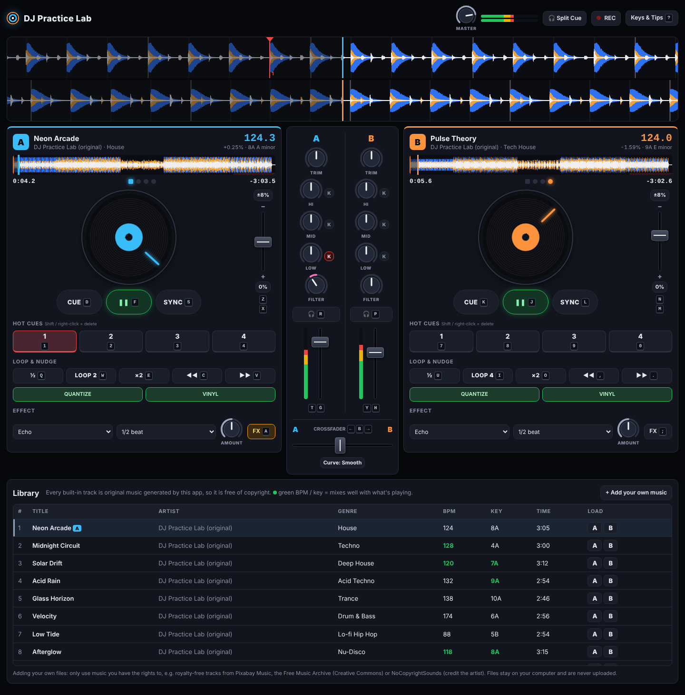
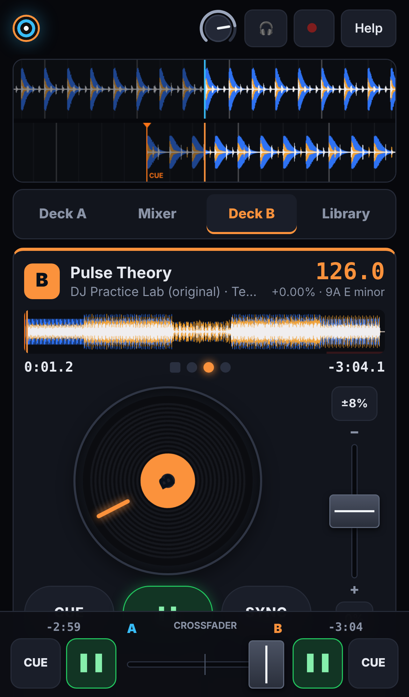

Learn to DJ with DJ Practice Lab
A step-by-step course for complete beginners. You'll go from pressing play for the first time to mixing a full set and recording it. Every step shows exactly which key to press or what to tap.
Use the 💻 / 📱 switch at the top to show controls for your computer, your phone, or both. Keep the decks open in another tab (Open the decks ↗) and follow along. Each lesson takes 10–20 minutes, and it's fine to repeat them as often as you like.
What a DJ actually does
A DJ plays songs one after another without the music ever stopping. The skill is in the transition, the 30 seconds or so where one song blends into the next. In a good transition:
- both songs play at the same speed, so their drums hit together (this is called beatmatching);
- the new song comes in at the right moment, usually where one musical section ends and the next begins;
- the two songs don't fight each other. You use the mixer to share out the bass, the volume and the melodies.
DJ Practice Lab gives you everything you need for this: two decks (players) called A and B, a mixer in the middle that blends them, and a library of tracks. All the built-in music was made by the app itself, so you can practise, record and share your mixes freely with no copyright worries.
Get set up
-
Open the app at brandontham1993-ux.github.io/DJ-Set.
Use Chrome, Edge, Firefox or Safari. Make the window as big as you can. Turn the phone sideways for the most room. To make it feel like an app, tap Share → Add to Home Screen.
- Put on headphones if you have them. You'll hear the details (like two kick drums slightly out of time) much more clearly. Wired, Bluetooth and laptop speakers all work.
- Tap Start the session. Browsers only allow sound after you tap something, which is why this button exists.
- Wait a few seconds. Each deck shows "Composing track…" while the app creates the music. Then deck A loads Neon Arcade and deck B loads Pulse Theory. These two are a deliberately easy first pair.
-
Check the volume.
Use the MASTER knob at the top right, plus your computer's volume. Use your phone's volume buttons. On iPhone, if you hear nothing, switch off Silent Mode and turn the media volume up.
A tour of the screen

The waveforms (top)
Each deck's music is drawn as a scrolling picture. The line in the middle is "now". Music to the right is coming up, and music to the left (dimmed) has already played. The colours show the sound: blue = bass (kick drums), orange = middle (snares, chords), white = high (hi-hats, cymbals).
The faint vertical lines are beats. Every 4th line is brighter: that's the start of a bar. These lines are your best friend for timing.
Each deck (left and right)
- Track name, BPM and key, e.g. Neon Arcade · 124.0 · 8A A minor. BPM (beats per minute) is the song's speed.
- Overview: the whole song as a thin strip. Tap anywhere on it to jump there. The red strip at the end marks the last 30 seconds.
- Time: elapsed on the left, time remaining on the right (it flashes red in the last 30 seconds). The 4 dots in the middle count the beats of each bar, and the square dot is beat 1.
- Jog wheel (the record), the CUE ▶ SYNC buttons, and the pitch (tempo) fader next to the record.
- Hot cues 1–4, loop buttons and an effect unit.
The mixer (middle)
One column per deck: TRIM (input volume), the HI MID LOW EQ knobs with K (kill) buttons, a FILTER knob, a 🎧 headphone button, a level meter and the volume fader. Under both columns is the crossfader, which slides the sound from deck A (left) to deck B (right).

How dance music is built
Dance music is extremely regular, and that's what makes DJing possible. Learn these four words:
- Beat: one kick drum ("boom"). Count along: 1, 2, 3, 4.
- Bar: 4 beats. On the waveform, a bar runs from one bright line to the next.
- Phrase: a group of 8 or 16 bars. Something changes at the start of every phrase: a new sound comes in, or the bass drops out.
- Section: the big parts of a song, made of phrases: intro, build, breakdown, drop, outro.
Every club track in the library has the same DJ-friendly shape. Here is Neon Arcade (124 BPM):
| Section | Length | What you hear | Neon Arcade starts at |
|---|---|---|---|
| Intro | 16 bars | Just drums, perfect for mixing in | 0:00 |
| Build | 8 bars | Bassline and clap arrive | 0:30 |
| Groove | 16 bars | Chords join | 0:46 |
| Breakdown | 16 bars | Drums stop, melody and pads, a rising "whoosh" | 1:17 |
| Drop | 24 bars | Everything at once, the peak | 1:48 |
| Outro | 16 bars | Back to just drums, perfect for mixing out | 2:34 (about 33 s left) |
The big idea: play the outro of one track over the intro of the next. Both are 16 bars of drums, so they overlap perfectly. You'll do exactly this in Lesson 3.
Play, pause & cue
- Start deck A.
Press F (or click ▶ on deck A).Tap ▶ on the A side of the bottom bar.Watch the waveform scroll, the record spin and the beat dots count 1-2-3-4. Nod your head to the beat.
- Pause it, then press play again. It carries on from where it stopped.
F again.Tap ❚❚.
- Jump somewhere else by tapping the middle of the overview strip. You land in the breakdown. Tap near the right-hand end to hear the outro.
Click the overview on deck A.Open the Deck A tab and tap its overview strip.
- Meet the CUE button. The cue point is a bookmark (the orange CUE marker), and it starts at the first beat of the song. While a track plays, pressing CUE jumps back to the bookmark and stops.
While playing, press D.While playing, tap CUE on the A side of the bottom bar.
- Preview from the cue. When stopped at the cue point, hold CUE. The track plays as long as you hold it and snaps back when you let go. DJs use this to check how a track starts.
Hold D, then let go.Press and hold CUE, then let go.
- Move the bookmark. Pause somewhere in the song, then press CUE once. The bookmark moves there, snapped to the nearest beat (because QUANTIZE is on). Pressing CUE while playing now returns there.
The mixer
Start deck A playing. Then try each control and listen.
- Volume fader: how loud the deck is in the mix. Pull it all the way down, then back up.
Hold G (down) and T (up) for deck A, or drag the fader.Mixer tab → drag deck A's fader (the tall one at the bottom of the A column).
- Crossfader: left plays A, right plays B, the middle plays both. Slide it all the way right and A goes silent.
← / → to move it, B to centre it.Drag the crossfader in the bottom bar.Put it back in the middle for now.
- EQ knobs: LOW controls bass (kick and bassline), MID the middle (claps, chords), HI the treble (hi-hats). Turn each one fully left and right to hear its part disappear or get louder.
Drag the knob up or down, or scroll over it. Double-click to reset to the middle.Put your finger on the knob and slide up or down. Double-tap to reset.
- Kill buttons (K) next to each EQ instantly remove that band. Try killing the LOW: the kick and bass vanish, but the hats keep going.
Shift+Q kills A's low, Shift+W the mids, Shift+E the highs. Press again to bring it back.Tap the K next to LOW and tap again to bring it back.
- Filter: one knob that's off in the middle. Turn it left and the sound gets muffled, like music through a wall. Turn it right and it gets thin and tinny, with the bass removed.
Shift+Z / Shift+X sweeps A's filter.Slide the FILTER knob. Double-tap to reset.
- TRIM and meters. The coloured meter beside each fader shows the level. Aim for green going into yellow, and avoid sitting in red. If one song is much louder than another (common with your own files), lower its TRIM knob.
Your first mix (with SYNC)
SYNC does the speed-matching for you, so you can focus on timing and blending. (Lesson 4 teaches you to do it by ear.)
Prepare (before you start the music)
- Reset: crossfader in the middle, every EQ in the middle, both filters in the middle. Both tracks should be loaded and stopped at their start. If a deck is somewhere else, press its CUE while it's playing: it jumps back to the first-beat bookmark and stops. Or reload the track from the Library.
- Turn deck B's volume fader all the way down. The audience shouldn't hear B until you're ready.
Hold H until B's fader is at the bottom.Mixer tab → drag B's fader to the bottom.
- Kill deck B's bass. Two kick drums and two basslines at once sound muddy.
Shift+U (B's LOW kill lights up red).Mixer tab → tap the K next to B's LOW.
- Match B's speed to A. Press SYNC on deck B. Its BPM changes from 126.0 to 124.0, the same as A.
Press L.Deck B tab → SYNC (or SYNC in the bottom bar when the phone is sideways).
Mix (follow the clock on deck A)
Start deck A (F / tap ▶ A) and enjoy the song. To skip the waiting while you practise, tap deck A's overview at about 80% of the way along to land in the drop just before the outro. Then watch deck A's remaining time:
Beatmatching by ear (no SYNC)
Two things can be wrong: the speed (tempo) and the position (one track a little ahead). You fix speed with the pitch fader and position with a nudge.
- Reload the starting pair: pause both decks, then in the Library load Neon Arcade onto A and Pulse Theory onto B. Press the 0% button under B's pitch fader so B is back at 126.0 BPM.
- Start A, and start B on a "1" with B's volume up and the crossfader in the middle, so you hear both. You'll hear them drift apart within a few bars: B is faster.
- Slow B down with the pitch fader. On this app, as on real DJ decks, the fader goes up = slower (−) and down = faster (+). Aim for B to show 124.0, which is about −1.6%.
Hold N to slow B down, M to speed it up (0.05% per step).Deck B tab → drag the pitch fader slightly up. Watch the BPM and % readout.
- Line up the kicks with a nudge. Even at the same speed, B may be a little ahead or behind. A nudge speeds up or slows down B only while you hold it, like pushing or holding back a spinning record.
Hold , to slow B briefly, . to push it ahead.Turn VINYL off on the Deck B tab, then spin B's jog wheel a little forward or back. Or hold ◀◀ / ▶▶.
- Keep listening. If the kicks stay together, you're matched. If they slowly drift apart again, the speed still isn't quite right: fix it with tiny pitch changes, then nudge back into line.
Cue points & hot cues
- Hot cues are 4 extra bookmarks per deck (pads 1–4). Tap an empty pad to save the current position (snapped to the beat), and tap a saved pad to jump straight to it, even while playing.
Deck A: 1 2 3 4 · Deck B: 7 8 9 0. Delete with Shift+number or right-click.Tap the coloured pads on a Deck tab. Press and hold a saved pad to delete it.
- Mark the important moments of a track. A good habit: pad 1 = first beat, pad 2 = start of the breakdown, pad 3 = the drop, pad 4 = start of the outro. Find each moment on the overview, pause just before it, use the waveform to put the playhead exactly on the bright bar line, then press the pad.
- Use hot cues to start a mix in the right place. Want to bring B in at its drop instead of its intro? Jump B to hot cue 3 and start it on A's "1".
- Fix a bad start. If you started B in the wrong place, keep its volume down, tap its hot cue on a "1" to restart it in time, and carry on.
EQ, filter & echo transitions
A. The bass swap (refined)
The version from Lesson 3, done more smoothly. Instead of using kill buttons, turn B's LOW knob all the way left before you start, then over one bar turn A's LOW down while turning B's LOW back to the middle. Smooth blends sound more professional, and kill-button swaps sound punchier. Use both.
B. The filter fade
- With both tracks beatmatched and B at full volume, slowly turn A's filter to the right over 8 bars. A gets thinner and thinner until only a "tssk" remains.
Tap Shift+X repeatedly or hold it, or drag A's FILTER knob.Slide A's FILTER knob slowly to the right in the Mixer tab.
- On the next bar line, pull A's volume down and reset its filter (double-click or double-tap the knob).
Or do it the other way round: start B with its filter turned left (muffled) and slowly open it up as it comes in. This works brilliantly coming out of a breakdown.
C. The echo out (a quick exit)
- On deck A's Effect row, choose Echo and 1/2 beat, and set AMOUNT to about halfway.
- About a bar before you want A to end, turn the effect on.
Press A (deck A's FX on/off).Tap FX on the Deck A tab.
- On the next "1", pause deck A (F / ▶ A) and start B with a hot cue or from its first beat at the same moment. A's echoes ring out over B's start like a fading tail.
- Turn A's FX off afterwards.
Loops & beat jumps
- Turn on a loop. The loop button repeats a few beats, starting from the beat you're on, seamlessly. The number on it (e.g. LOOP 4) is how many beats.
Deck A: W on/off, Q halves, E doubles. Deck B: I, U, O.Tap LOOP, ½ and ×2 on the Deck tab.
- Use it to buy time. A's outro is almost over and B isn't ready? Put an 8 or 16-beat loop on A's outro (drums only). It now plays forever until you turn the loop off.
- Build tension with a loop roll. First save hot cue 3 on the first beat of the drop (Lesson 5). One bar before the end of the breakdown, loop 4 beats. Then halve the loop on each beat (2, then 1, then ½) so the repeats get faster and faster. On the next "1", tap hot cue 3: the deck jumps straight into the drop and the loop switches off.
- Beat jump moves forward or back exactly 4 beats without losing the beat. Use it to skip part of a section or fix a phrase that's one bar off.
Deck A: Shift+C / Shift+V. Deck B: Shift+, / Shift+.Hot cues work best for jumping on a phone. Save one a bar or phrase ahead and tap it on the "1".
Mixing in key (harmonic mixing)
Every track has a key, shown as a Camelot code like 8A. Picture a clock face numbered 1–12. Two tracks sound good together when their codes are:
- the same (8A + 8A),
- one step around the clock (8A + 7A or 9A),
- or the same number with A↔B swapped (8A + 8B).
The Library does this for you: when a deck is playing, compatible keys and BPMs turn green.
| Track | Genre | BPM | Key | Mixes well with |
|---|---|---|---|---|
| Neon Arcade | House | 124 | 8A | Afterglow (8A), Pulse Theory & Acid Rain (9A), Solar Drift (7A) |
| Pulse Theory | Tech House | 126 | 9A | Acid Rain (9A), Neon Arcade & Afterglow (8A), Glass Horizon (10A) |
| Afterglow | Nu-Disco | 118 | 8A | Neon Arcade (8A), Solar Drift (7A), Pulse Theory (9A) |
| Solar Drift | Deep House | 120 | 7A | Afterglow & Neon Arcade (8A) |
| Acid Rain | Acid Techno | 132 | 9A | Pulse Theory (9A), Glass Horizon (10A) |
| Glass Horizon | Trance | 138 | 10A | Acid Rain & Pulse Theory (9A) |
| Midnight Circuit | Techno | 128 | 4A | Speed matches the house tracks; mix on the drums-only parts |
| Velocity | Drum & Bass | 174 | 6A | Solar Drift's key (7A); Low Tide's tempo in double time, but in a different key |
| Low Tide | Lo-fi Hip Hop | 88 | 5B | Velocity's tempo in half time (different key, so mix on the drums); great as a set opener |
Headphone cueing (like a real booth)
In a club, the DJ listens to the next track in headphones before anyone else hears it. With Split Cue, the app copies this with one pair of headphones: left ear = your private cue, right ear = what the audience hears.
- Put on headphones (this doesn't work on speakers).
- Turn on 🎧 Split Cue at the top of the screen (the 🎧 icon on a phone).
- Press deck B's 🎧 button in the mixer to send it to your left ear.
Press P (deck A's is R).Mixer tab → tap the 🎧 under B's FILTER.
- With B's volume fader down, play B and beatmatch it. You'll hear it in your left ear only, while the right ear plays A as normal.
- When it's in time, bring B's fader up. Now it reaches the audience too (right ear).
Scratching basics
- Make sure VINYL is on (green) for the deck. In vinyl mode, touching the record stops it, just like a real turntable.
- Switch the crossfader curve to Curve: Sharp (scratch) in the mixer. Now the crossfader cuts in and out instantly at its edges.
- Find a short, punchy sound such as a clap or a chord stab. Save it as a hot cue so you can return to it.
- Baby scratch: press play, grab the record (click and hold, or put your finger on it), and move it back and forth in a steady rhythm along with the beat of the other deck. Let go to let the record carry on.
Click and drag around the record, or drag the big waveform left and right.Put a finger on the record (or the big waveform) and rub it back and forth.
- Once that feels good, add crossfader cuts: open the crossfader on the forward stroke and cut it on the backward stroke. That's the start of the "chop" and "transform" scratches.
Play & record a full set
- Plan your order. A smooth beginner set that rises in energy and stays in key:
The tempo climbs 118 → 138. Each time, sync the incoming track to the playing one. Once the old track has gone, slowly ease the pitch fader back towards 0% over a minute or two, so the set keeps gathering energy.
# Track BPM · Key Suggested transition 1 Afterglow 118 · 8A Opener 2 Neon Arcade 124 · 8A Bass swap, outro over intro (Lesson 3) 3 Pulse Theory 126 · 9A Filter fade (Lesson 6B) 4 Acid Rain 132 · 9A Bass swap, then nudge the tempo up 5 Glass Horizon 138 · 10A Loop roll into the drop (Lesson 7) or echo out - Load the next track only after the previous transition is finished. The app won't let you load onto a deck that's playing; that's to protect you from accidentally stopping the music.
Use ↑ ↓ to pick a track, then [ to load it onto A or ] onto B. Or click A / B in the Library.Library tab → tap A or B on the track's row.
- Record. Tap ● REC at the top before your first track starts. Tap it again at the end and your mix downloads as an audio file.
- Listen back the next day, away from the decks. Note where the beats drifted, where it got muddy (two basslines) and where it got too loud. Then practise just those moments.
7-day practice plan (20 minutes a day)
| Day | Practise | You're ready to move on when… |
|---|---|---|
| 1 | Lessons 1–2, then Lesson 3 three times | You can start B on the "1" without looking at the dots |
| 2 | Lesson 3 in both directions (A→B and B→A) with different track pairs | Your bass swaps land exactly on a bar line |
| 3 | Lesson 4: beatmatch Neon Arcade ↔ Pulse Theory by ear | You can tell which track is ahead from the "ba-boom" |
| 4 | Lesson 4 again with bigger gaps (Afterglow 118 ↔ Neon Arcade 124) and Lesson 5 | You can match without looking at the BPM |
| 5 | Lessons 6–7: one filter fade, one echo out and one loop roll | Each transition sounds deliberate, not accidental |
| 6 | Lessons 8–10, then make a 3-track mini set | You choose tracks by key and hear the difference |
| 7 | Lesson 11: record the full 5-track set | You'd happily send the recording to a friend 🎉 |
Before every mix, check
- The incoming deck's volume is down and its LOW is killed or turned down
- The incoming track is synced or beatmatched
- You know where the next phrase starts (count the bright bar lines)
- The meters aren't in the red
- You've un-killed and reset the EQs on the deck that just finished
Common mistakes & fixes
| Problem | Fix |
|---|---|
| No sound at all | Tap Start the session. Check the MASTER knob, the crossfader position (all the way to one side mutes the other deck) and that the deck's volume fader is up. On iPhone, turn off Silent Mode and raise the media volume. |
| "Deck A is playing — pause it first" | That's a safety feature. You can only load onto a deck that's stopped. |
| The beats sound like a horse galloping | The tracks aren't lined up. Press SYNC on the incoming deck, or nudge it (Lesson 4). |
| It sounds muddy and boomy during a mix | Two basslines at once. Kill or turn down one deck's LOW. |
| The meters are red or the sound distorts | Lower the volume faders or the TRIM of the loud deck. Louder isn't better. |
| Total disaster (a "trainwreck") | Stay calm: slam the crossfader to the good track (Shift+← / Shift+→, or drag it on a phone), fix the other deck, and try again on the next phrase. Every DJ has done it. |
| A track takes a few seconds to load | Normal: the app composes the music as it loads. Phones take a little longer. |
| Sound stopped after locking the phone | Phones pause web audio when locked. Unlock and tap the screen, and it resumes. |
| I can't find SYNC on my phone | Open the Deck A or Deck B tab, or turn the phone sideways to show it in the bottom bar. |
Glossary
- BPM
- Beats per minute: how fast a track is.
- Beat / bar / phrase
- One kick / 4 beats / 8–16 bars. Music changes at phrase boundaries.
- Downbeat ("the 1")
- The first beat of a bar, shown by the square dot and the bright line.
- Beatmatching
- Making two tracks play at the same speed with their beats lined up.
- Pitch / tempo fader
- Changes a deck's speed. Up = slower, down = faster.
- Nudge
- A brief speed-up or slow-down to line up beats without changing the tempo.
- SYNC
- Automatic beatmatching: matches the speed and lines up the beat.
- Cue / hot cue
- Bookmarks in a track that you can jump to instantly.
- Quantize
- Snaps cues and loops to the nearest beat so they're always in time.
- EQ / kill
- Bass, mid and treble controls / a button that removes a band completely.
- Filter
- Sweeps the sound to muffled (left) or thin (right).
- Crossfader
- The sideways slider that blends from deck A to deck B.
- Transition
- The moment you blend from one track into the next.
- Bass swap
- Switching which track's bass is playing, right on a bar line.
- Camelot key
- A simple code (like 8A) that tells you which tracks sound good together.
- Split cue / PFL
- Listening to a track in headphones before the audience hears it.
- Trainwreck
- A mix where the beats crash into each other. It happens to everyone.
Cheat sheet
💻 Keyboard
| Action | Deck A | Deck B |
|---|---|---|
| Play / pause | F | J |
| Cue (hold to preview) | D | K |
| Sync | S | L |
| Hot cues (Shift = delete) | 1–4 | 7–0 |
| Loop ½ / on-off / ×2 | Q W E | U I O |
| Kill low / mid / high | Shift+Q W E | Shift+U I O |
| Tempo − / + | Z X | N M |
| Filter | Shift+Z X | Shift+N M |
| Nudge slower / faster | C V | , . |
| Beat jump −4 / +4 | Shift+C V | Shift+, . |
| Volume up / down | T G | Y H |
| Effect on / off | A | ; |
| Headphone cue | R | P |
| Crossfader | ← → · B centre · Shift+arrow = slam | |
| Library | ↑ ↓ choose · [ load to A · ] load to B | |
| Help in the app | ? | |
📱 Touch
| Do this | How |
|---|---|
| Play, cue, sync, crossfader | Bottom bar (SYNC shows there when the phone is sideways, and is always on the Deck tabs) |
| Turn a knob | Slide your finger up or down on it · double-tap to reset |
| Move a fader | Drag it, or tap the track · double-tap to reset |
| Scratch | Finger on the record (VINYL on) or the big waveform |
| Nudge | VINYL off, then spin the record; or hold ◀◀ / ▶▶ |
| Hot cue | Tap to set or jump · press and hold to delete |
| Two things at once | Use two fingers, e.g. the crossfader and a kill button |